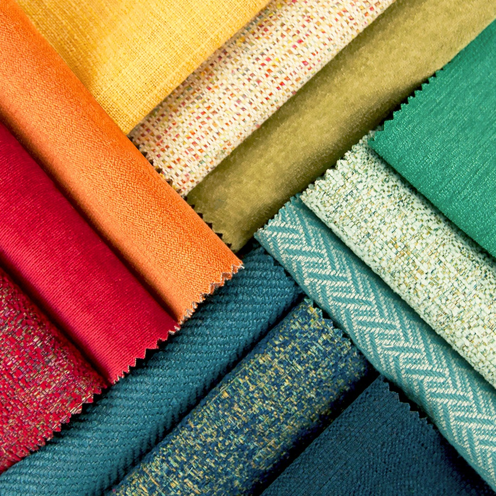
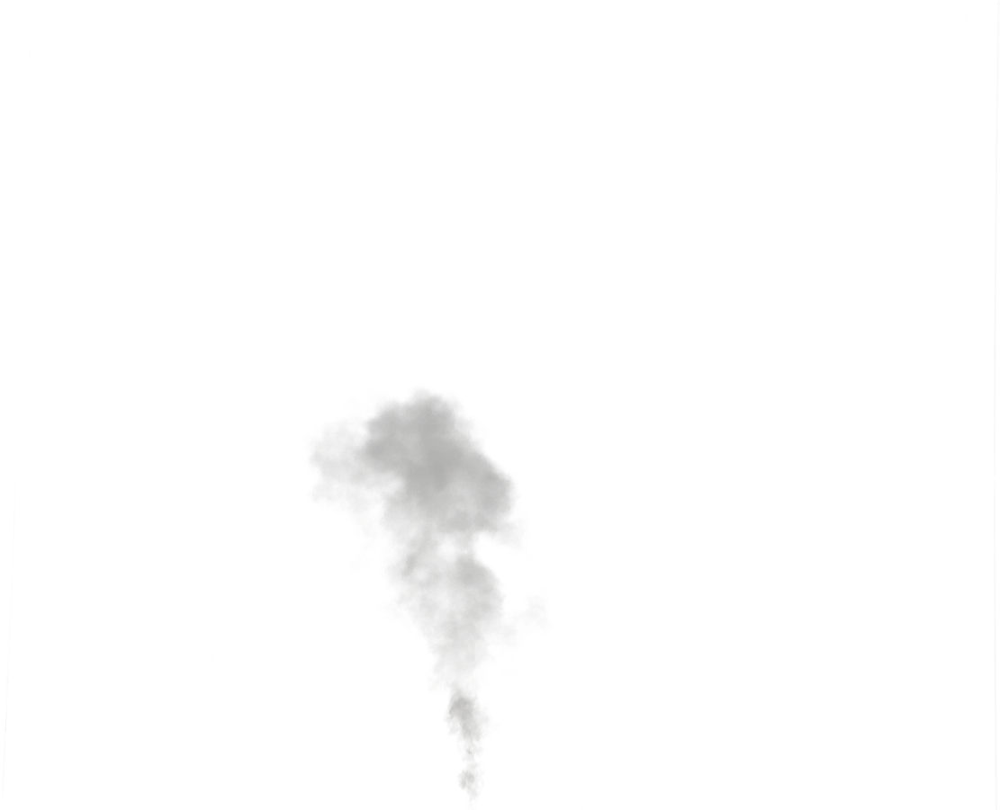

According to the United Nations Economic Commission for Europe,[43] the fast fashion system provides opportunities for economic growth but the entire fashion industry hinders sustainability efforts by contributing to 20% of wastewater. In addition, fast fashion is responsible for nearly 10 percent of global gas emissions. Providing insight, the Ellen Macarthur Foundation released study results on fashion and suggests a new circular system. A singular t-shirt requires over 2,000 liters of water to make.[44] Clothing is not utilized to its full potential, the Ellen MacArthur Foundationexplains that linear systems are contributing to unsustainable behavior and the future of fashion may need to transition towards a circular system of production and consumer behavior.
Journalist Elizabeth L. Cline, author of Overdressed: The Shockingly High Cost of Cheap Fashion and one of the earliest critics of fast fashion, notes in her article Where Does Discarded Clothing Go?[45] that Americans are purchasing five times the amount of clothing than they did in 1980. Due to this rise in consumption, developed countries are producing more and more garments each season. The United States imports more than 1 billion garments annually from China alone.[46] United Kingdom textile consumption surged by 37% from 2001 to 2005.[47] The Global Fashion Business Journal reported that in 2018, the global fiber production has reached the highest all-time, 107 million metric tons.
The average American household produces 70 pounds (32 kg) of textile waste every year.[49] The residents of New York City discard around 193,000 tons of clothing and textiles, which equates to 6% of all the city's garbage.[45] In comparison, the European Union generates a total of 5.8 million tons of textiles each year.[50] As a whole, the textile industry occupies roughly 5% of all landfill space.[49] The clothing that is discarded into landfills is often made from non-biodegradable synthetic materials.
Greenhouse gases and various pesticides and dyes are released into the environment by fashion-related operations.[52] The United Nations estimated that the business of what we wear, including its long supply chains, is responsible for 10 percent of the greenhouse gas emissions heating our planet.[53] The growing demand for quick fashion continuously adds effluent release from the textile factories, containing both dyes and caustic solutions.[54] In comparison, greenhouse gas emissions from textile production companies is more than international flights and maritime shipping combined annually. The materials used not only affect the environment in textile product, but also the workers and the people who wear the clothes. The hazardous substances affect all aspects of life and release into the environments around them.[55] Optoro estimates that 5 billion pounds of waste is generated through returns each year, contributing 15 million metric tons of carbon dioxide to the atmosphere.[56] Fast fashion production has doubled since 2000, with brands such as Zara producing 24 collections a year and H&M producing about 12 to 16 collections a year.
